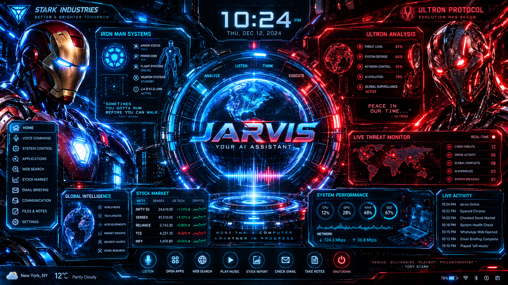

JARVIS • INTERFACE ONLINE
JARVIS // COMMAND
Try: open google · open youtube · search quantum computing · open gmail · time
CLICK HUD CONTROLS • PRESS / TO TYPE • F FOR FULLSCREEN

Try: open google · open youtube · search quantum computing · open gmail · time